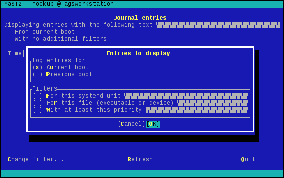

Now that we have learned how precious the screen space is in YaST dialogs, the obvious next step is to split the widgets in 2 different dialogs. The solution proposed in this tutorial uses one dialog to display the log entries -with some additional live filtering capabilities- and a second one containing all the controls that we need for fine-tuning the filters. A picture is worth a thousand words.
For a better understanding of the interface, simply checkout the corresponding revision in the git local copy and play with it.
{% highlight bash %} git checkout two_dialogs_mockup Y2DIR=src/ /usr/sbin/yast2 --ncurses mockup {% endhighlight %}Checking the code you can see that our MockupDialog class is now split into EntriesDialog and QueryDialog. The first one is starting to be quite interactive, with a search box intended to allow filtering in "real time" and a button to launch the other dialog, in addition to the previously available buttons to refresh and quit. Let's take a look to the event loop.
{% highlight ruby %} def event_loop loop do case Yast::UI.UserInput when :cancel # Break the loop break when :filter if QueryDialog.new.run log.info "The user has set new arguments for the query" else log.info "The user canceled the query dialog" end when :search log.info "Handling of the search text input not implemented yet" when :refresh log.info "Handling of the refresh button not implemented yet" else log.warn "Unexpected input #{input}" end end end {% endhighlight %}Now if the user clicks on the "change filter" button a new dialog will be opened on top of the queries dialog. That new dialog will handle the interaction with the user until it's closed. In that moment, it will return a value to EntriesDialog which will be again in charge of handling the user interaction.
The other interesting bit of the new event loop is the existence of a new type of user input labeled as :search. By monitoring the YaST log file, you can see that it happens every time the user modifies the content of the input field with the corresponding identifier. This is not the first time we use an input field in our interface, but it's the first time we notice that kind of events. What makes this input field different from the others? As expected, the answer is in our code. This is an excerpt from the "create_dialog" method.
{% highlight ruby %} HBox( Label(_("Displaying entries with the following text")), HSpacing(1), InputField(Id(:search), Opt(:hstretch, :notify), "", "") ) {% endhighlight %}The search input field receives two options. The first one is related to the dialog's layout and tells the widget to occupy all the horizontal available space. The second one is the answer to our mystery. By default, all libYUI widgets except the buttons can be considered "passive" from the events point of view. Their purpose is to display information or to allow the user to enter some data, but they don't generate events visible by Yast::UI.UserInput. The :notify option can be used to change this behavior, so our search box generates an input every time its content changes.
QueryDialog is now in charge of displaying most of the widgets that were cluttering the interface in the past. That means that there is not much interesting code there from the layout point of view. But there is an important difference when compared to EntriesDialog - the absence of an event loop. In this case, the "run" method follows the typical approach from most YaST dialogs and simply returns a result based on the button pressed by the user.
{% highlight ruby %} def run return nil unless create_dialog begin case Yast::UI.UserInput when :cancel false when :ok true else raise "Unexpected input #{input}" end ensure Yast::UI.CloseDialog end end {% endhighlight %}We are finally happy enough with the mockup, it exposes all the functionality we originally wanted to have in a way that works in restrictive ncurses environments. It's time to implement some real functionality, so let's grab a coffee and prepare for the the fourth step.